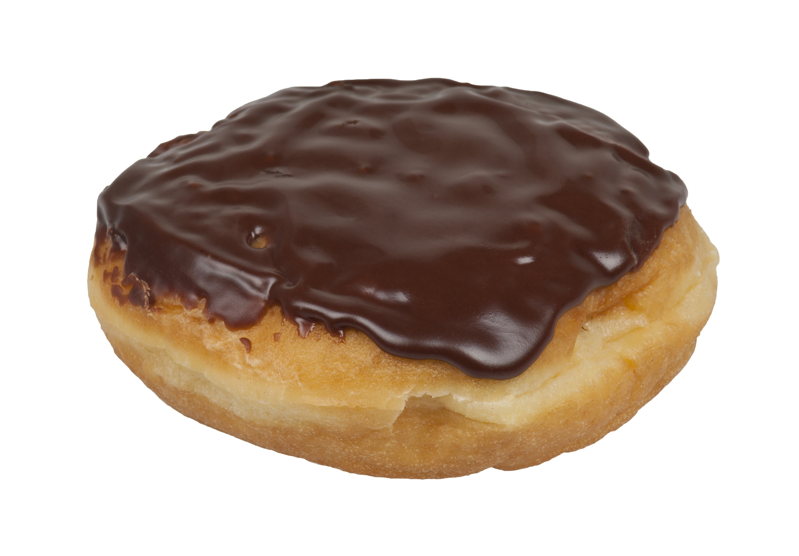

Documentation
What Is A Donut?
Donuts are pastries made of fried dough. They are sweet and come in many different flavors. Donuts are typically ring-shaped unless the center is filled. Occasionally, they are shaped like spheres (donut holes) or rectangles (Long Johns).
Donuts are usually eaten for breakfast or as a dessert. They pair well with warm drinks like coffee, tea, and hot chocolate.
How Are Donuts Made?
Here is a donut recipe sourced from WikiBooks available under CC BY-SA 4.0. I modified the ingredients section to make it a list instead of a table.
Ingredients:
- 2 envelopes of active dry yeast
- 1/4 cup of warm water (105-115 °F)
- 1 1/2 cups of lukewarm milk
- 1/2 cup of white sugar
- 1 teaspoon of salt
- 2 eggs
- 1/3 cup of shortening
- 5 cups of all-purpose flour
- 1 quart of vegetable oil
- 1/3 cup of butter
- 2 cups of confectioner's sugar
- 1 1/2 teaspoons of vanilla
- 4 tablespoons of hot water
Procedure:
- Scald milk by bringing it to at least 180 °F (82 °C) then cool it to less than 105 °F (41 °C).
- Sprinkle the yeast over the warm water, and let it sit for 5 minutes.
- In a large bowl, mix together the yeast mixture, milk, sugar, salt, eggs, shortening, and 2 cups of the flour. Mix for a few minutes at low speed, or stirring with a wooden spoon.
- Beat in remaining flour ½ cup at a time until the dough no longer sticks to the bowl. Knead for about 5 minutes.
- Place the dough into a greased bowl, and cover. Set in a warm place to rise until doubled. Dough is ready if upon touching, indention remains.
- Turn the dough out onto a floured surface, and gently roll out to ½ inch thickness. Cut with a floured doughnut cutter.
- Cover doughnuts loosely with a cloth. Let sit out to rise again until doubled.
- Melt butter in a saucepan over medium heat. Stir in confectioners' sugar and vanilla until smooth. Remove from heat, and stir in hot water 1 tablespoon at a time until the icing is somewhat thin, but not watery. Set it aside then.
- Heat oil in a deep-fryer or large heavy skillet to 350 °F (175 °C). Slide doughnuts into the hot oil using a spatula. Turn doughnuts over as they rise to the surface. Fry doughnuts on each side until golden brown.
- Remove from hot oil, and drain on a wire rack.
- Dip doughnuts into the glaze while still hot, and set onto wire racks to drain off excess. Keep a cookie sheet or tray under racks for easier clean up.
Why Donuts?
I love donuts and I was hungry while making this website.
